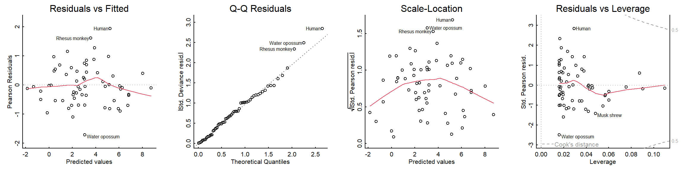
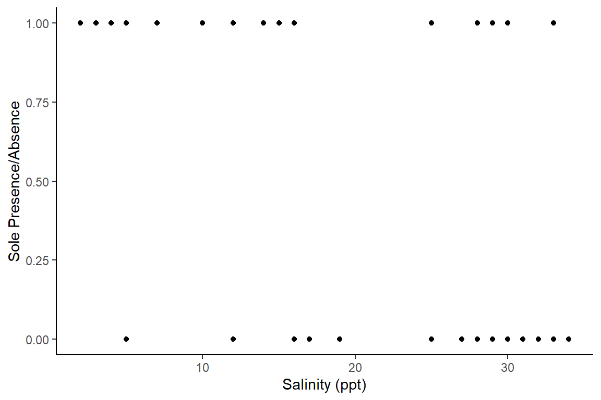
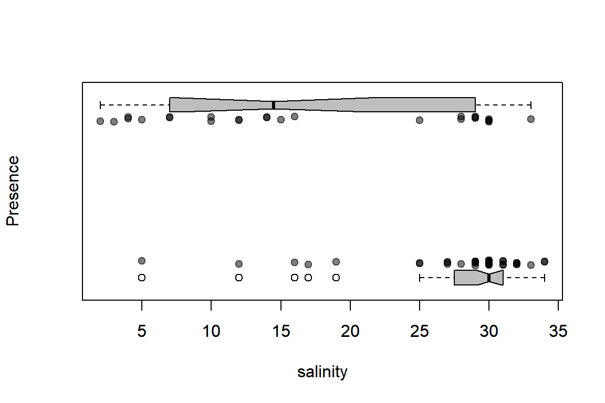
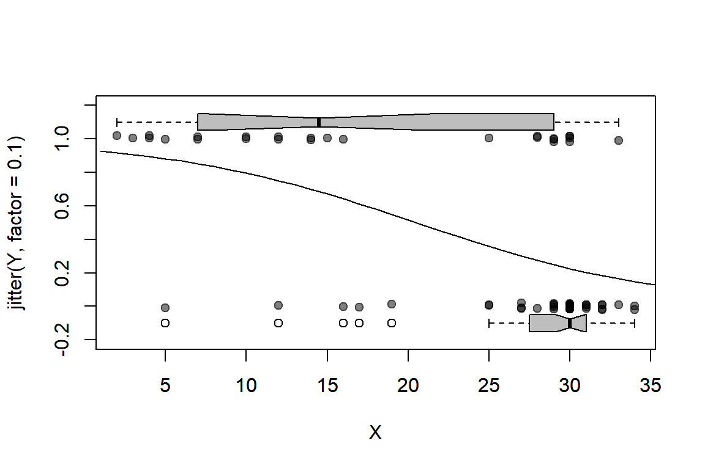
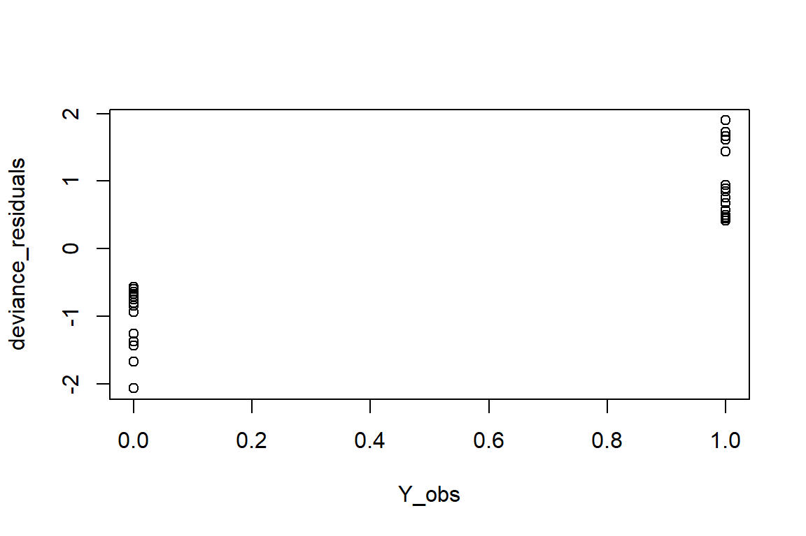
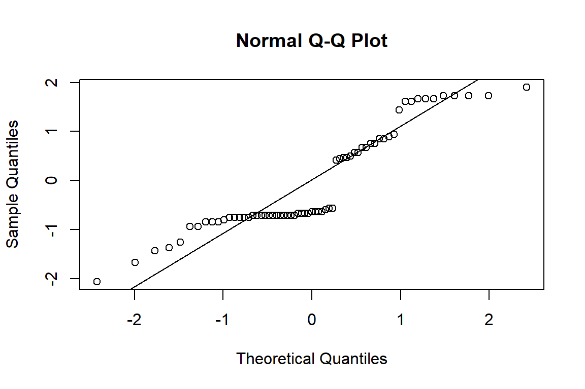
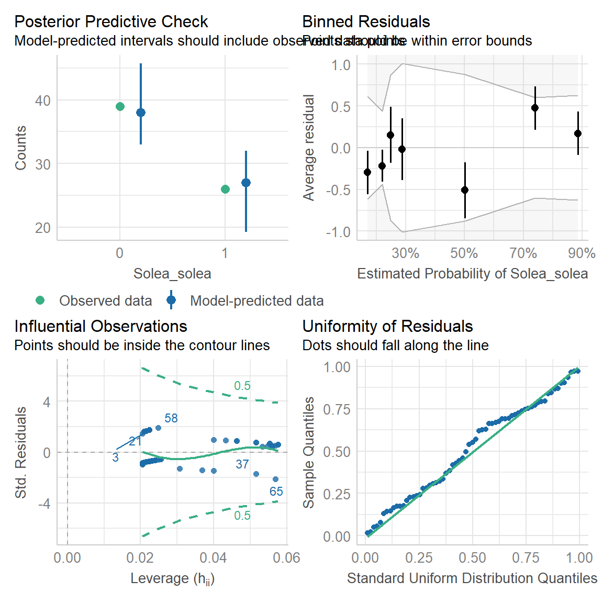

GLM’s and Logistic Regression (with Likelihoods)
EFB 796: Practical Seminar in Quantitative Ecology
Nicki Barbour & Elie Gurarie
2025-01-29
1 What’s a “GLM” anyway?
From our last lecture, we now have a deeper understanding of linear regression, using both OLS and MLE with a normal distribuion. But what if we had data that required a different probability distribution (e.g., count data, binary data,…)?
Generalized linear models (GLM) provide this flexibility. Unlike OLS linear regression, GLM’s do not assume a linear relationship between the response and covariates - instead, they assume that there is a linear relationship between a transformed response variable and the covariates. This transformation is captured with the Link Function (\(g(\mu)\)). The Link Function is the key component of a GLM - it links the random component (probability distribution of the response variable) with the systematic component (covariates).
The systematic component (\(\eta\)) is also called the “linear predictor” in a GLM, containing all the covariates \(x\):
\[\eta_i=\beta_0+\beta_1x_{1i}+...+\beta_kx_{ki}\]
We can express this same formula for the linear predictor as:
\[\eta= X\beta\] where \(X\) is a matrix of the covariates and \(\beta\) is all the unknown parameters (coefficients).
Getting back to our Link Function \(g(\mu)\), its purpose is to link the linear predictor (\(\eta\)) with the center or mean (\(\mu\)) of the distribution function used, such that:
\[g(\mu)= X\beta = \eta\]
Because GLM’s do not assume a linear relationship between the response and explanatory variables, just between \(\eta\) and the explanatory variables, they have much flexibility in the distributions available for the response variable, \(Y\). In fact, any of the exponential family distributions are available, including normal (Gaussian), exponential, beta, Bernoulli, Poisson, gamma, and binomial.
Each of these distributions have a special Link Function, also called a “canonical link function”. To be picky, the “canonical link function” technically transforms the mean of the response variable \(\mu\) (also represented as \(\mu=E(Y)\), where \(E\) represents the “expected value” of the mean \(\mu\) of the response \(Y\)) to the “natural exponential parameter” for the exponential family distribution of choice. Don’t worry about that too much, as in practice we almost always just use the canonical link functions, which are clearly defined for each distribution.
The Link Function, \(g(\mu)=X\beta\), basically defines the transformation you have to apply to a particular distribution’s \(\mu\) to fit a linear relationship with the covariates (linear predictor).
How do you get a particular distribution’s \(\mu\)? With the “Mean Function”! For example, for the normal distribution, which has an “identity” link (e.g., no real transformation), the Link Function is \(g(\mu)=X\beta=\mu\) and the Mean Function is \(\mu=X\beta\), such that the linear predictor equation becomes:
\[\mu_i = \eta_i = \beta_0+\beta_1x_{1i}+...+\beta_kx_{ki}\] Another example is the Poisson distribution, which has a “Log” Link Function, \(g(\mu)=X\beta=\log(\mu)\), such that \(\mu=exp(X\beta)\) for the Mean Function and the linear predictor equation is:
\[\log(\mu_i) = \eta_i = \beta_0+\beta_1x_{1i}+...+\beta_kx_{ki}\]
A list of examples for the most common GLM distributions:
| Distribution | Link name | Link function | Mean function |
|---|---|---|---|
| Normal distribution | “Identity” | \(\mu\) | \(\mu={\bf X}\beta\) |
| Poisson distribution | “Log” | \({\bf X}\beta=\log(\mu)\) | \(\mu=\exp({\bf X}\beta)\) |
| Exponential distribution | “Negative Inverse” | \({\bf X}\beta=-(\frac{1}{\mu})\) | \(\mu=-(\frac{1}{{\bf X}\beta})\) |
| Gamma distribution | “Negative Inverse” | \({\bf X}\beta=-(\frac{1}{\mu})\) | \(\mu=-(\frac{1}{{\bf X}\beta})\) |
| Bernoulli distribution | “Logit” | \({\bf X}\beta=\log(\frac{\mu}{1-\mu})\) | \(\mu=\frac{\exp({\bf X}\beta)}{1+\exp({\bf X}\beta)}\) |
| Binomial distribution | “Logit” | \({\bf X}\beta=\log(\frac{\mu}{n-\mu})\) | \(\mu=\frac{\exp({\bf X}\beta)}{1+\exp({\bf X}\beta)}\) |
As you may have noticed, our classic linear regression could be conducted with a GLM, using the “Identity” link. Assuming a linear relationship between the linear predictor \(\eta\) and the transformed response variable with a GLM, instead of the response variable and covariates, releases us of our OLS assumptions of normality and homogeneity of variance for the residuals - in fact, our response does not have to be a continuous numeric variable at all! Models are fit using MLE, not OLS, providing the benefits of working with likelihood functions to estimate parameters.
So what are the main assumptions of a GLM?
1 - Linearity between the response variable and the linear predictor (captured with the Link Function)
2 - Residuals are i.i.d (independent of each other and follow the chosen probability distribution)
3 - Overdispersion (observed model variance >> expected variance) is not present (or has been accounted for)…
Each distribution has a variance function \(V(\mu)\), which describes how the variance of the response variable \(var(Y)\) depends on its mean \(\mu\). The variance of the response variable, specifically, is equal to the variance function multiplied by a constant (\(\phi\)): \(var(Y)=\phi V(\mu)\). To check for overdispersion, you can compare the estimated variance of your model \(var(Y)\) to the expected variance for your chosen distribution (\(V(\mu)\)). Overdispersion is common for count data, so it’s important to check for the appropriate variance function for your distribution and compare your estimated variance to it .
As a reminder, much of the distributions you would use in a GLM are covered in the “All the Distributions Are Related” lecture in Week 3 folder, including their parameters, and mean and variance functions. And for more reading, the Wikipedia page for GLM’s has a nice table of the canonical link functions (and mean functions) for different exponential family distributions:

Let’s go through some examples, using both “by hand” MLE and the
glm function from the stats R package.
2 Linear model
We will try a GLM version of our simple linear model from the last
lecture, using the mammals data from the MASS
package.
require(MASS)
data(mammals)First, we process our data to have body weight in grams and then log-transformed versions of our \(X\) variable (body size) and our \(Y\) variable (brain size).
mammals$body <- mammals$body*1000
mammals$log_brain <- log(mammals$brain)
mammals$log_body <- log(mammals$body)
head(mammals)## body brain log_brain log_body
## Arctic fox 3385 44.5 3.795489 8.127109
## Owl monkey 480 15.5 2.740840 6.173786
## Mountain beaver 1350 8.1 2.091864 7.207860
## Cow 465000 423.0 6.047372 13.049793
## Grey wolf 36330 119.5 4.783316 10.500399
## Goat 27660 115.0 4.744932 10.2277432.1 Maximum likelihood estimation
For a linear model with a normal distribution, we will use the “identity” link. The canonical Link Function is \(g(\mu)=X\beta=\mu\) and the Mean Function is \(\mu=X\beta\). Our model is:
\[\mu = \beta_0+\beta X\] Where \(X\) is the (log-transformed) body size of our mammals. Our goal is to estimate our coefficients, \(\beta_0\) and \(\beta_1\), as well as our variance (\(\sigma^2\)), given \(\mu\) and our observed data \(Y\). We can write this as:
\[\cal L(\beta, \sigma^2|\bf X, Y)\] where \(\beta\) is the coefficients and \(X\) is the covariate design matrix.
To estimate \(\mu\) (a.k.a, \(\hat \mu\)), remember that for the normal
distribution, \(\mu=X\beta\). In our
likelihood function below, we define our coefficients beta0
and beta, and our variance sigma2, and then
find mu.hat (\(\hat \mu\),
a.k.a our linear predictor a.k.a \(X\beta\)) according to our model.
neglogLik_Gaussian <- function(params = c(beta0, beta1, sigma2), X, Y){
beta0 <- params['beta0']
beta1 <- params['beta1']
sigma2 <- params['sigma2']
mu.hat <- beta0 + beta1 * X # calculates the linear predictor
logProb <- dnorm(Y, mean = mu.hat, sd = sqrt(sigma2), log = TRUE)
-sum(logProb)
}mammals_fit <- optim(par = c(beta0 = 1, beta1 = 1, sigma2 = 2),
neglogLik_Gaussian,
X = mammals$log_body,
Y = mammals$log_brain,
hessian = TRUE)
mammals_fit## $par
## beta0 beta1 sigma2
## -3.0573239 0.7516352 0.4664991
##
## $value
## [1] 64.33647
##
## $counts
## function gradient
## 150 NA
##
## $convergence
## [1] 0
##
## $message
## NULL
##
## $hessian
## beta0 beta1 sigma2
## beta0 1.329049e+02 1.095840e+03 0.01959574
## beta1 1.095840e+03 1.031096e+04 0.30040516
## sigma2 1.959574e-02 3.004052e-01 142.45089441Once again, we get 0.75 as our \(\beta_1\) value!
We can get our standard errors from the Hessian and then get our 95% confidence intervals:
se <- sqrt(diag(solve(mammals_fit$hessian)))
mammals_params <-
with(mammals_fit,
data.frame(estimate = par, se = se,
CI.low = par - 1.95*se,
CI.high = par + 1.95*se))
mammals_params## estimate se CI.low CI.high
## beta0 -3.0573239 0.24663221 -3.5382567 -2.5763911
## beta1 0.7516352 0.02800082 0.6970336 0.8062368
## sigma2 0.4664991 0.08378522 0.3031179 0.62988032.2 Using the
glm function
We can also compare our “by hand” MLE with the output from the
glm function (stats package), specifying our
family as “gaussian” (the default is actually Gaussian, but
all of the glm options listed above are available, see
?glm).
mammals_glm <- glm(log_brain ~ log_body, data = mammals, family = "gaussian")
summary(mammals_glm)##
## Call:
## glm(formula = log_brain ~ log_body, family = "gaussian", data = mammals)
##
## Coefficients:
## Estimate Std. Error t value Pr(>|t|)
## (Intercept) -3.05767 0.25071 -12.20 <2e-16 ***
## log_body 0.75169 0.02846 26.41 <2e-16 ***
## ---
## Signif. codes: 0 '***' 0.001 '**' 0.01 '*' 0.05 '.' 0.1 ' ' 1
##
## (Dispersion parameter for gaussian family taken to be 0.4820452)
##
## Null deviance: 365.111 on 61 degrees of freedom
## Residual deviance: 28.923 on 60 degrees of freedom
## AIC: 134.67
##
## Number of Fisher Scoring iterations: 2Looks the same! Note that you can get AIC values the same way we covered in the last lecture.
-2*(-mammals_fit$value) + 2*3## [1] 134.6729Which should be the same output as with the AIC function:
AIC(mammals_glm)## [1] 134.6729Remember our assumption, of i.i.d normal residuals. As with
lm(), you can just “plot” the fitted model to obtain
diagnositc residual plots:
plot(mammals_glm)
The residuals look good!
3 Logistic regression
“Logistic regression” is a widely used term for a Bernoulli linear model, i.e. a model with two outcomes. In various forms (some more complex) this is probably the most widely used generalized linear model because so many kinds of data are binary (dead / alive; present / absent; male / female; etc.)
When dealing with binary data there in one immediate issue: The normal assumption of residuals is never satisfied. And even visualizing effects can pose problems. We’ll walk through these with the example below.
3.1 Sole data
As an example, we’ll use a presence/absence dataset of common sole (a kind of flat-fish, Solea solea) in the estuary of the Tejo river in Portugal.1
Solea <- read.csv("data/Solea.csv")The response variable is binary (absence = 0, presence = 1), and there are various potential explanatory covariates, including salinity, temperature, depth, and relative percentages of gravel/sand/mud.
str(Solea)## 'data.frame': 65 obs. of 13 variables:
## $ Sample : int 1 2 3 4 5 6 7 8 9 10 ...
## $ season : int 1 1 1 1 1 1 1 1 1 1 ...
## $ month : int 5 5 5 5 5 5 5 5 5 5 ...
## $ Area : int 2 2 2 4 4 4 3 3 3 1 ...
## $ depth : num 3 2.6 2.6 2.1 3.2 3.5 1.6 1.7 1.8 4.5 ...
## $ temp : int 20 18 19 20 20 20 19 17 19 21 ...
## $ salinity : int 30 29 30 29 30 32 29 28 29 12 ...
## $ transp : int 15 15 15 15 15 7 15 10 10 35 ...
## $ gravel : num 3.74 1.94 2.88 11.06 9.87 ...
## $ large_sand : num 13.15 4.99 8.98 11.96 28.6 ...
## $ fine_sand : num 11.93 5.43 16.85 21.95 19.49 ...
## $ mud : num 71.2 87.6 71.3 55 42 ...
## $ Solea_solea: int 0 0 1 0 0 0 1 1 0 1 ...We will investigate the relationship between Sole presence and salinity for this example.
3.2 Visualizations
Let’s start with a plot of this data - plotting presence/absence data with a continuous covariate is not very straightforward.
A crude ggplot option:
library(ggplot2)ggplot(data=Solea, aes(x=salinity, y=Solea_solea))+
geom_point()+
theme_classic()+
xlab("Salinity (ppt)")+ylab("Sole Presence/Absence")
And a nicer example in base R with (Elie’s) hand-written function:
plotBinary <- function (X, Y, ...){
plot(X, jitter(Y, factor = 0.1), col = rgb(0, 0, 0, 0.5),
pch = 19, ylim = c(-0.2, 1.2), ...)
boxplot(X ~ Y, horizontal = TRUE, notch = TRUE, add = TRUE,
at = c(-0.1, 1.1), width = c(0.1, 0.1), col = "grey",
boxwex = 0.1, yaxt = "n")
}with(Solea, plotBinary(salinity, Solea_solea, xlab="salinity", ylab = "Presence", yaxt = "n"))
From these plots, we can see that Sole seem to be avoiding higher salinities but we can use a logistic regression model to investigate further.
3.3 The Bernoulli model
First step is to pick our distribution and associated Link Function. Since our data is constrained from {0,1}, the Bernoulli distribution is appropriate - this uses the “Logit” Link, with Canonical Link \(g(\mu)=X\beta=\log(\frac{\mu}{1-\mu})\) and Mean Function \(\mu=\frac{exp(X\beta)}{1+exp(X\beta)}\). Our probability model is:
\[Y_i \sim {\cal Bernoulli}(\mu)\]
where:
\[\log\left(\frac{\mu}{1-\mu}\right) = \beta_0+\beta X\]
That “logit link” is what is often referred to as the “log-odds”, where the “odds” of a probability are \(p \over 1-p\). Thus, for example, if \(p = 0.5\) gamblers will say “even odds”. If \(p = 0.75\), they’ll say “three to one odds”, because \(0.75 / (1-0.75) = 3/1\), etc.
In our equation, \(Y_i\) is the \(i\)th observation (0 or 1), \(\mu\) is the predicted probability, \(X\) is the salinity, and the \(\beta\)’s are the regression coefficients. Since our goal is to estimate the coefficients, \(\beta_0\) and \(\beta_1\), given \(X\) and our observations data \(Y\). We can write this as:
\[\cal L(\beta|\bf X, Y)\]
We’ll get values for \(\beta\), but if we want to convert those back to a probability we have to apply the “inverse link” function, which in this case is \(\exp(\mu) / \left(1 + \exp(\mu)\right)\), or what we sometimes like to call the “expit” function.
3.4 Writing the likelihood
A note before we dig into creating our Likelihood function - the Bernoulli distribution is actually a special case of a binomial distribution, as it only has 2 outcomes (other binomial distributions have >2 outcomes), with a single trial per observation (e.g., similar to a coin toss - can only have a 1 or 0 at a given observation).
So, in R, the functions for a Bernoulli distribution are the same as
those for a binomial distribution, e.g., dbinom.
We define our log likelihood function step-wise, first with our linear predictor \(\eta\) (a.k.a \(X\beta\)), then transforming \(\eta\) to get \(\hat \mu\) (which represents the probability of success, or observing a Sole for a given observation).
neglogLik_Bernoulli <- function(params = c(beta0, beta1), X, Y){
beta0 <- params['beta0']
beta1 <- params['beta1']
eta <- beta0 + beta1 * X # calculates the linear predictor
mu.hat <- exp(eta)/(1 + exp(eta)) # calculates mu_hat via the log-link, e.g. probability of getting a 1 for Y
# use size = 1 for trial = 1
logProb <- dbinom(Y, size = 1, prob = mu.hat, log = TRUE)
-sum(logProb)
}We can then fit our (log)-likelihood function using
optim:
Solea_fit <- optim(par = c(beta0 = 0, beta1 = -1),
neglogLik_Bernoulli,
X = Solea$salinity, Y = Solea$Solea_solea,
hessian = TRUE)
Solea_fit## $par
## beta0 beta1
## 2.6601654 -0.1298135
##
## $value
## [1] 34.28
##
## $counts
## function gradient
## 85 NA
##
## $convergence
## [1] 0
##
## $message
## NULL
##
## $hessian
## beta0 beta1
## beta0 11.26252 274.3119
## beta1 274.31190 7500.4898We get parameter estimates of:
Solea_fit$par## beta0 beta1
## 2.6601654 -0.1298135But what do these mean in terms of observing Sole?
Currently, our coefficients give us values as “log odds”, e.g., the coefficient value for our \(\beta_1\) of -0.13 tells us that for a one-unit increase in salinity, the log odds is expected to decrease by about ~ 0.13.
This is not very intuitive, however, so we can back-transform \(\beta_1\) to get it in terms of the “odds ratio”:
exp(Solea_fit$par[2])## beta1
## 0.8782592If you get an “odds ratio” value < 1, it indicates a decrease in the odds of observing a success (e.g., a sole); a value > 1 indicates an increase in the odds of observing a success.
Here we have a value < 1 (0.88), indicating that for every one unit increase in salinity, the odds of observing a Sole is decreased by 89% (a highly negative relationship).
3.5 Plotting predictions
We can plot our predicted relationship (for values of salinity 1-40 ppt) using our fancy base R plot function again:
eta <- Solea_fit$par[1] + Solea_fit$par[2] * c(1:40)
mu.hat <- exp(eta)/(1 + exp(eta))
plotBinary(Solea$salinity,Solea$Solea_solea)
lines(1:40, mu.hat)
There us a much higher probability of observing Sole at lower salinities.
We can get confidence intervals from our model as before, using our Hessian:
se <- sqrt(diag(solve(Solea_fit$hessian)))
Solea_coeffs <-
with(Solea_fit,
data.frame(estimate = par, se = se,
CI.low = par - 1.95*se,
CI.high = par + 1.95*se)
)
Solea_coeffs## estimate se CI.low CI.high
## beta0 2.6601654 0.90158337 0.9020778 4.41825299
## beta1 -0.1298135 0.03493645 -0.1979396 -0.06168745This is an extremely useful table, as it shows that the confidence intervals around \(\beta_1\) (the effect of salinity) are all below 0, so the effect is significantly negative.
AIC value:
AIC <- -2*(-Solea_fit$value) + 2*nrow(Solea_coeffs)
AIC## [1] 72.563.6 Using the
glm function
Let’s compare to the glm output! Everything is done in
one line.
Solea_glm <- glm(Solea_solea ~ salinity, data = Solea, family = "binomial")
summary(Solea_glm)##
## Call:
## glm(formula = Solea_solea ~ salinity, family = "binomial", data = Solea)
##
## Coefficients:
## Estimate Std. Error z value Pr(>|z|)
## (Intercept) 2.66071 0.90167 2.951 0.003169 **
## salinity -0.12985 0.03494 -3.716 0.000202 ***
## ---
## Signif. codes: 0 '***' 0.001 '**' 0.01 '*' 0.05 '.' 0.1 ' ' 1
##
## (Dispersion parameter for binomial family taken to be 1)
##
## Null deviance: 87.492 on 64 degrees of freedom
## Residual deviance: 68.560 on 63 degrees of freedom
## AIC: 72.56
##
## Number of Fisher Scoring iterations: 4This contains all the information above. Obviously, it is more efficient in this way, but when you do it with a likelihood you get a deeper appreciation of what’s happening beneath the hood.
3.7 Deviance residuals
We can get our residuals next, using model predicted coefficient values to calculate \(\eta\) and then our expit function (Mean Function) to transform \(\eta\) or \(X\beta\) to our predicted probabilities, \(\hat \mu\).
For non-normal GLM’s, we should use the deviance residuals, since they are based on the likelihood function and can better assess outliers and the fit of the model for individual observations.
Each deviance residual tells you how much a given observation contributes to this “total deviance”. Deviance residuals are scaled and standardized, such that if the model is a good fit, they will follow a normal distribution. Problems can be identified by plotting the deviance residuals vs the fitted (\(Y\)) values.
The formula to calculate the deviance residuals (\(d\)) for a given observation \(i\) is:
\[d_i=\text{sign}(Y_i-\hat \mu_i)\sqrt{-2\log\left(\frac{{\cal L}(Y_i, \hat \mu_i)}{{\cal L}(1-Y_i,1-\hat \mu_i)}\right)}\]
Where \(\text{sign}\) is a function that is equal to 1 for positive values, and -1 for negative values (i.e., it ensures the correct sign for the residuals) and \({\cal L}(Y_i, \hat \mu_i)\) is the Likelihood of observing \(y_i\), given the predicted probability \(\hat \mu_i\).
We extract our predicted probabilities (\(\hat \mu\)) and then put them into the (rather nasty) formula to calculate the deviance residuals:
Y_obs <- Solea$Solea_solea
X_obs <- Solea$salinity
B_0 <- Solea_coeffs$estimate[1]
B_1 <- Solea_coeffs$estimate[2]
eta <- B_0 + B_1 * X_obs
mu_hat <- exp(eta)/(1 + exp(eta))
deviance_residuals <- sign(Y_obs - mu_hat) * sqrt(-2 * (Y_obs * log(mu_hat) + (1 - Y_obs) * log(1 - mu_hat)))plot(deviance_residuals ~ Y_obs)
You can go ahead and plot a QQ plot of the deviance residuals, and you’ll get something vaguely normal-ish:
qqnorm(deviance_residuals)
qqline(deviance_residuals)
The “residual deviance” is the sum of the square of the deviance residuals:
residual_dev <- sum(deviance_residuals^2)
residual_dev## [1] 68.56This is also available in the bottom of the summary from our
glm model:
summary(Solea_glm)##
## Call:
## glm(formula = Solea_solea ~ salinity, family = "binomial", data = Solea)
##
## Coefficients:
## Estimate Std. Error z value Pr(>|z|)
## (Intercept) 2.66071 0.90167 2.951 0.003169 **
## salinity -0.12985 0.03494 -3.716 0.000202 ***
## ---
## Signif. codes: 0 '***' 0.001 '**' 0.01 '*' 0.05 '.' 0.1 ' ' 1
##
## (Dispersion parameter for binomial family taken to be 1)
##
## Null deviance: 87.492 on 64 degrees of freedom
## Residual deviance: 68.560 on 63 degrees of freedom
## AIC: 72.56
##
## Number of Fisher Scoring iterations: 4We can use our “residual deviance” to check for overdispersion (common with count and binary data, where the observed variance of the data is >> the variance predicted by the model). We put it into a formula with our degrees of freedom \(df\) to calculate the “dispersion parameter”:
\[\text{Dispersion Parameter} = \frac{\text{Residual Deviance}}{\text{degrees of freedom}}\]
We want a smaller residual deviance value, as this essentially indicates the variability in our data that was not able to be explained with our data.
The dispersion parameter should be close to 1 for a well-fitting model. If it’s > 1 (e.g., > 2), that suggests that there is overdispersion (a common phenomenon!) and that you might consider dealing with that with a quasi-binomial model, which explicitly estimates the dispersion parameter. Or, then, try to include more variables to explain that overdispersion.
The degrees of freedom \(df\) is \(n-k\), with \(n\) the number of observations and \(k\) the number of model parameters. We have 65 observations and two parameters (\(\beta_0\), \(\beta_1\)), so 63 degrees of freedom.
df <- nrow(Solea)-2
dispersion_param <- residual_dev/df
dispersion_param## [1] 1.088254Our dispersion parameter is quite close to 1, so this is a nice model!
There is, incidentally, a nice package called
performance which has a bunch of functions for seeing how
good your model is. Here’s an example of its functionality:
require(performance)
check_overdispersion(Solea_glm)## # Overdispersion test
##
## dispersion ratio = 1.028
## p-value = 0.912check_model(Solea_glm)
check_autocorrelation(Solea_glm)## OK: Residuals appear to be independent and not autocorrelated (p = 0.748).This example from an excellent ecological statistics book: Mixed Effects Models and Extensions in Ecology with R (2009). Zuur, Ieno, Walker, Saveliev and Smith. Springer↩︎